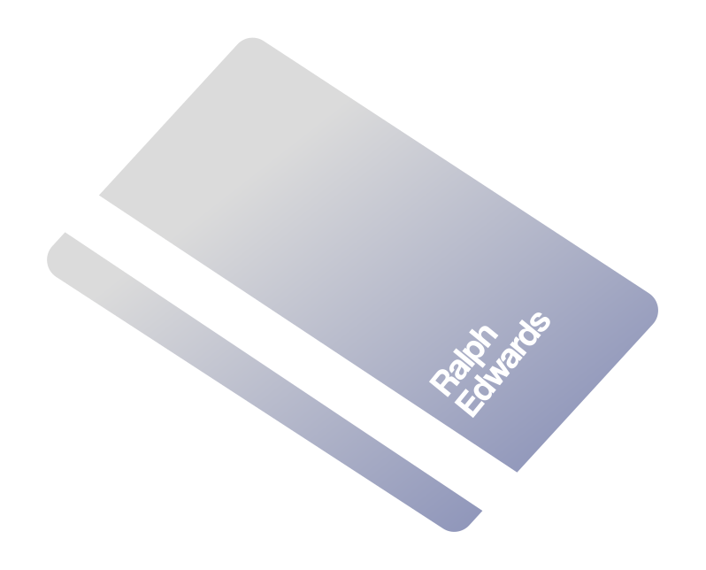
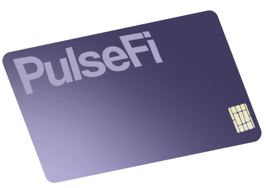
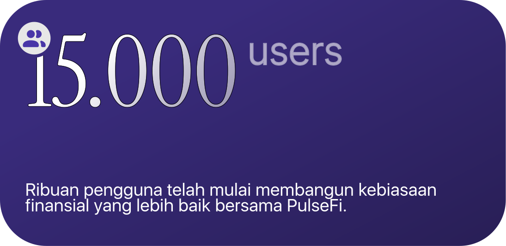
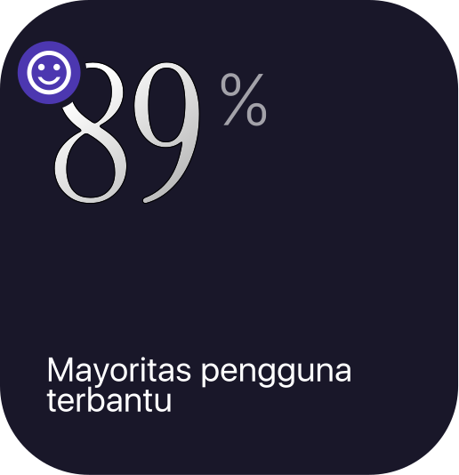
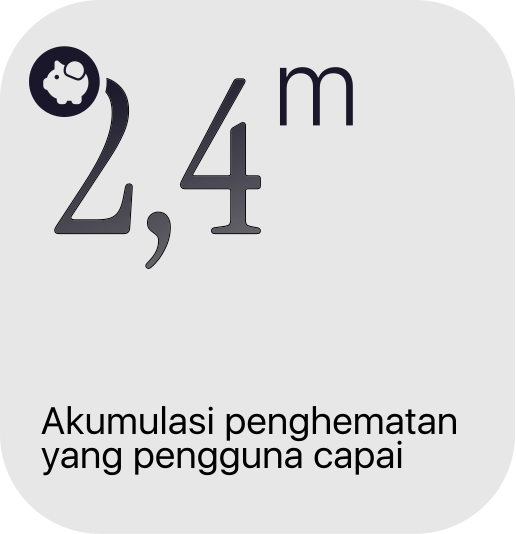
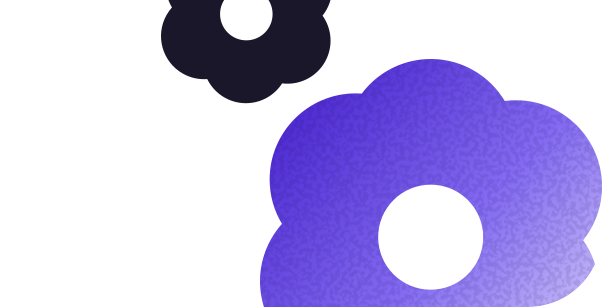

STATISTIK



Tujuan kami adalah meningkatkan literasi finansial, mempermudah kalian membangun masa depan.
Uangmu punya pola. Kenali cara kerjanya.
Financial Twin membaca pola transaksi untuk menunjukkan bagaimana, kapan, dan mengapa kamu menggunakan uang.
Temukan pola yang sering terlewat.
AI Insight mengubah data menjadi pemahaman tentang kebiasaan, pengeluaran impulsif, dan momen ketika kamu paling boros.
Uji keputusan sebelum menjalaninya.
Simulasikan perubahan kecil seperti mengurangi jajan atau menambah tabungan, lalu lihat dampaknya di masa depan.
Ubah kebiasaan, satu langkah kecil.
PulseFi mengenali perubahan pola dan memberi dorongan yang relevan agar kamu bisa mengambil keputusan dengan lebih sadar.

Semua transaksi, satu gambaran utuh.
Catat pemasukan dan pengeluaran dalam satu tampilan sederhana untuk memahami ke mana uangmu pergi.
